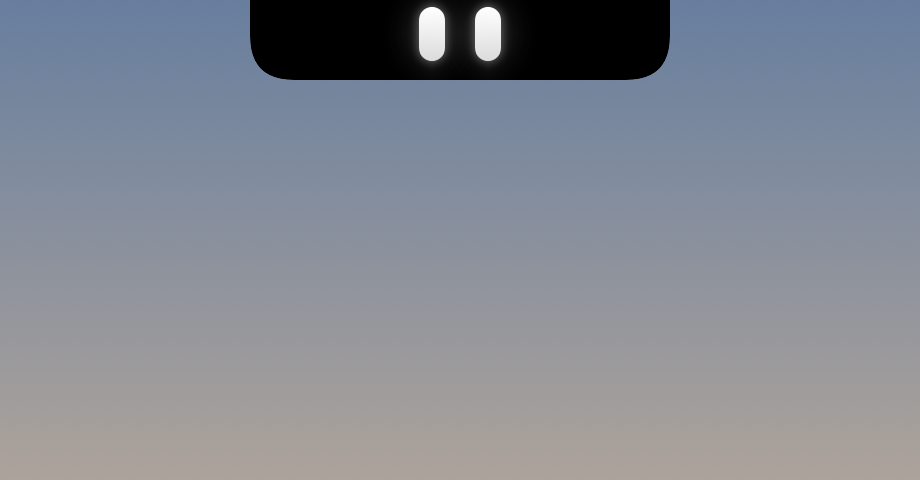
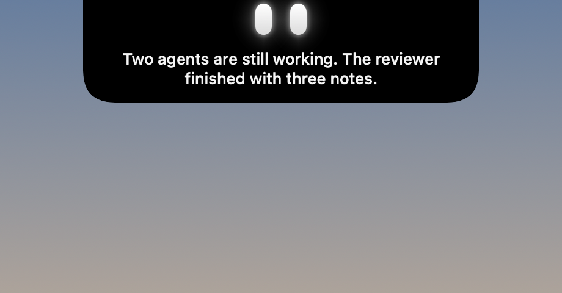
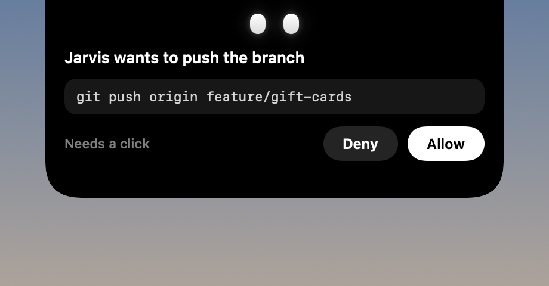
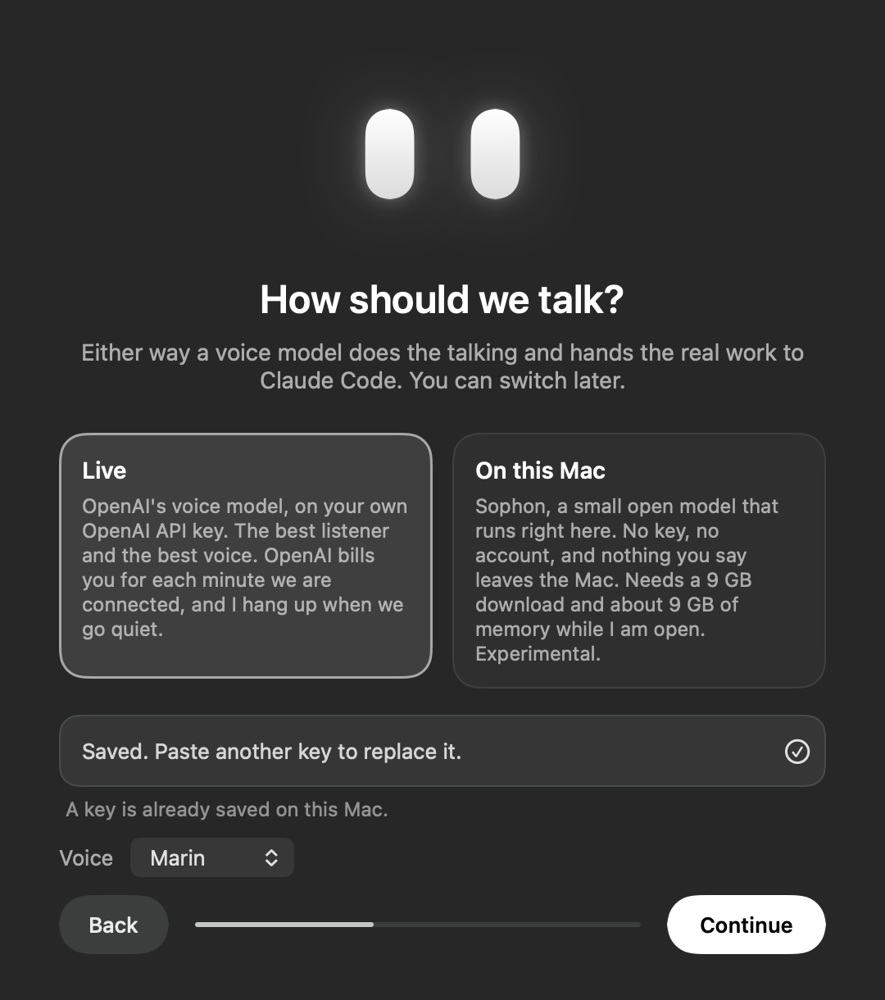
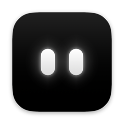

What you see
Listening

Say the name and the eyes open. They stay open while you talk.
Speaking

What it says is written under the eyes, so you can read along with the sound off.
Asking

The command is right there. A push like this one waits for a click, not a spoken yes.
How it works
Say its name. It wakes up and listens.
The name is heard on your Mac, and nothing leaves it until you have said it. Control Option Space does the same thing without a word.
Listening
Then just ask. A voice model takes the turn.
It knows when you are done, lets you cut in, and handles the hellos itself. Anything real it hands to Claude Code and gets out of the way.
Working on it
Claude Code does the work and reports back.
An interactive session on your own subscription starts workers, watches every agent you have running in herdr, and tells you only what matters.
Two agents are still working. The reviewer finished with three notes.
What it does
Talking
- Wakes by name
- On device
- Recognised on the Mac, so asleep means nothing is sent anywhere.
- Talk key
- Control Option Space
- For when the room is loud or you are on a call.
- Lets you cut in
- Full duplex
- Talk over it and it stops. It knows what you did not hear.
- Hangs up by itself
- 15 seconds
- Say bye, or just go quiet.
Working
- Hands the work over
- Your plan
- It never does the job itself. A Claude Code session does.
- Runs workers
- Three at a time
- Starts agents in herdr and tells you who is on what.
- Watches every agent
- What matters
- Finished, stuck, or waiting on you. The rest stays quiet.
- Asks before it acts
- Voice or click
- The command shows in the notch and it asks out loud.
Yours
- Its name
- Jarvis by default
- Setup asks what it should answer to.
- Its memory
- Local
- One settings file on your Mac. No database, no account with us.
- One copy
- Always
- Open it twice by accident and the second one leaves.
What it costs

The app
- Notch Assistant
- Free
- The app itself. No account with us, no server of ours.
- Claude Code
- Your plan
- The work runs in an interactive session on the plan you already have, never the API.
The voice, pick one
- Live
- Your key
- OpenAI's voice model on your own API key. OpenAI bills you by the minute connected, and it hangs up when you go quiet.
- On this Mac
- Free
- Sophon, an open model. No key, nothing leaves the Mac. A 9 GB download and 16 GB of memory or more. Experimental.
Good to know
Does it send my audio anywhere? Asleep, no. The name is recognised on your Mac. Awake, audio goes to the voice you picked: OpenAI with the live voice, nowhere at all with the voice on this Mac.
Do I need an OpenAI key? Only for the live voice, and it is always your own. The app ships with none. Pick the voice on this Mac and you need no key.
Does it use the Claude API? No. It talks to an interactive Claude Code session, so the work runs on your Claude subscription.
What is herdr? A terminal multiplexer for coding agents. With it, the assistant sees every agent you have running and starts its own workers there.
Can it run things without asking? When Claude Code needs permission, the notch opens with the command and it asks you out loud. You answer, or you click.
Can I call it something else? Yes. Jarvis is only the default.
Which Macs? Apple silicon on macOS 26 or later. It is built for MacBooks with a notch.
How good is the voice on this Mac? It answers in about a second and hands work over reliably. It is a small model, so it is worse than the live voice at ignoring people talking nearby.
Is it signed by Apple? Not yet. The first time, macOS needs one Terminal line to open it. The read-me in the disk image has it.
Get it
Put a pair of eyes in your notch, say hello, and stop typing into panes.
